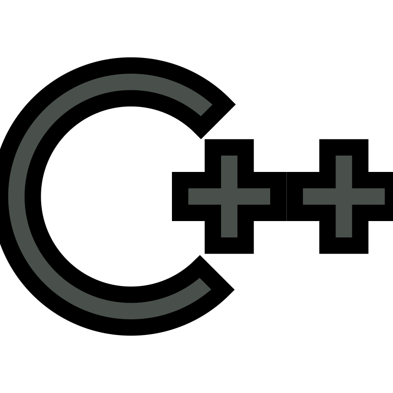
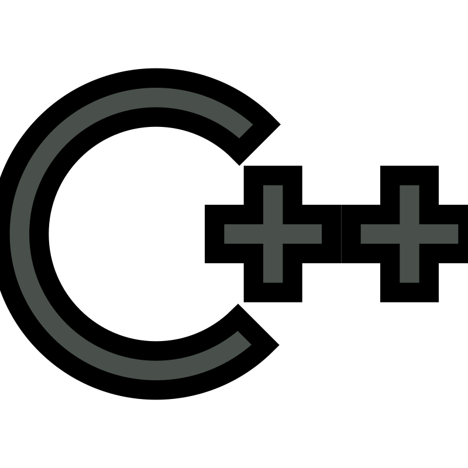

Box of Squingus
An innovative platformer spawned from Ludum Dare Game Jam #54. This game sees the player as Squingus, a charming but troubled cat, navigate the world from inside of its box, the titular Box of Squingus in this challenging and creative platforming challenge. Can the player transform Squingus' curse into a valuable asset?
 
